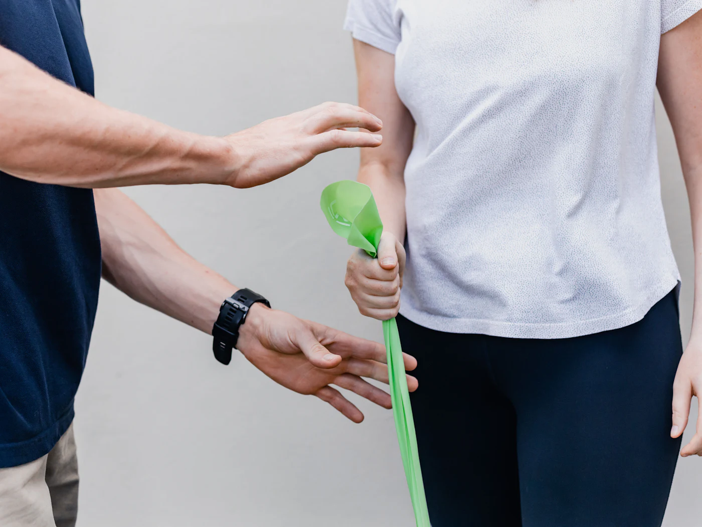
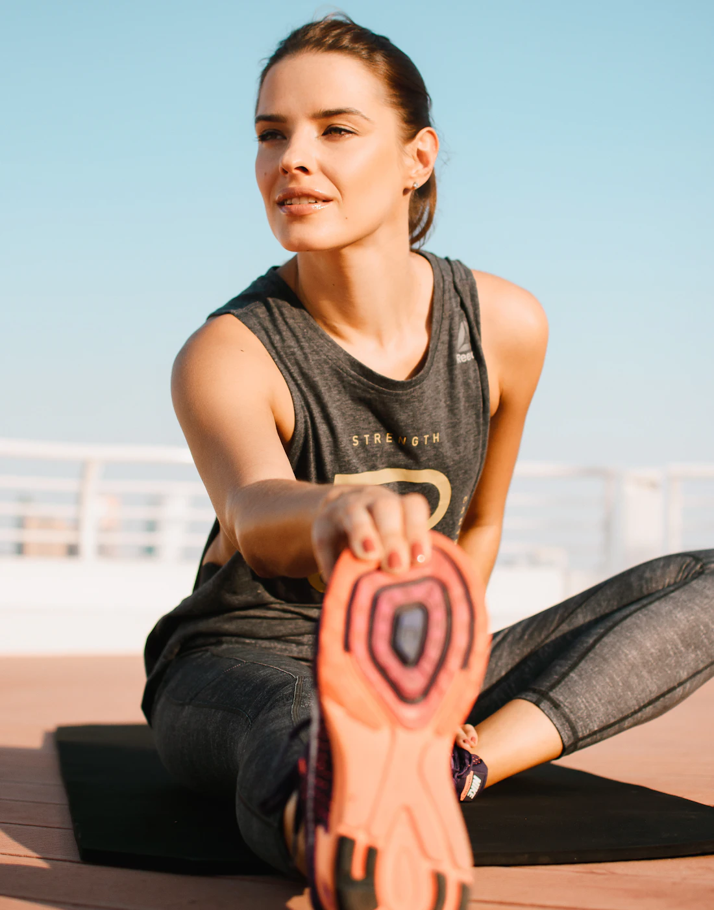

Suelo pélvico y posparto
Un espacio de confianza para tratar lo que muchas veces no se cuenta. Valoración individual y ejercicio específico tras el parto y en cualquier etapa.
Fisioterapia personalizada en el centro de Logroño, con la atención cercana de Ana San Juan.
Cada cuerpo cuenta una historia distinta. Por eso empezamos escuchando la tuya, y tratamos a la persona entera, no solo la zona que duele.

Fisioterapeuta y directora del centro
Ana dirige el centro con una idea sencilla: entender el origen del problema antes de tratarlo. Combina terapia manual y ejercicio terapéutico para que mejores en consulta y también fuera de ella.
Lesiones musculares, tendinopatías y readaptación para volver a entrenar con seguridad.
Recuperación tras fracturas, esguinces, cirugías y prótesis articulares.
Técnicas manuales para aliviar el dolor y devolver movilidad a articulaciones y tejidos.
Programas de ejercicio pautado y progresivo que consolidan cada mejora.
Valoración y tratamiento de incontinencia, prolapsos y dolor pélvico.
Diástasis abdominal, cicatrices y vuelta segura al ejercicio después del parto.
Cuidado de la salud pélvica de la mujer en cada etapa, del embarazo a la menopausia.
Bebés y niños: tortícolis, plagiocefalia y alteraciones del desarrollo motor.
Técnicas para mejorar la ventilación y despejar las vías respiratorias, en niños y adultos.
Movilidad, equilibrio y fuerza para mantener la autonomía con los años.
¿No encuentras tu caso? Atendemos muchas otras dolencias. Llámanos y lo valoramos
Un espacio de confianza para tratar lo que muchas veces no se cuenta. Valoración individual y ejercicio específico tras el parto y en cualquier etapa.

Del tratamiento de la lesión a la vuelta al rendimiento, con una readaptación progresiva y medible.
Sesiones tranquilas, adaptadas a cada edad, con las familias como parte del tratamiento.
Ilustración tridimensional de una columna vertebral que se alinea a medida que avanzas por el método.
Método de trabajo
La primera consulta empieza por ti: tu historia, tu día a día y lo que quieres volver a hacer.
Exploramos movilidad, fuerza y control del movimiento para encontrar el origen del dolor, no solo el síntoma.
Sesiones individuales que combinan terapia manual y ejercicio terapéutico, ajustadas a tu evolución.
Te llevas pautas claras para casa y seguimos tu progreso hasta que puedas continuar por tu cuenta.
Reserva por teléfono o déjanos tus datos y te llamamos para buscar el mejor horario.
Pide cita llamando al 941 246 312.
Cómo llegar (Google Maps)Rellena el formulario y te llamamos para confirmar día y hora. Si lo prefieres, llámanos de lunes a viernes, de 9:00 a 18:00.
941 246 312Asistente del centro
Respuestas automáticas sobre el centro
Respuestas automáticas: no escribas datos de salud. Para valorar tu caso, llama o pide cita.
No se ha podido abrir el enlace aquí. Ábrelo en tu navegador o copia el enlace.